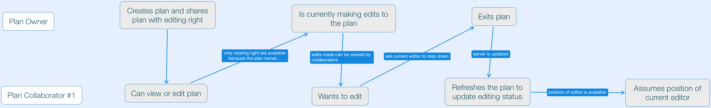

Workforce Planning (WFP) is a powerful application that allows users to project and analyze labor supply and demand based on economic factors by creating plans. During my 12-month work term as a UX Design Intern at Visier, I spent the majority of my time dedicated to designing features with the PM and Design Lead of WFP.
In many use cases, there are multiple users within an organization who need to collaborate across teams to make decisions about a workforce. WFP needed a feature that allowed users to manage both sharing and editing rights in a plan.
Upon speaking to the development team, I learned that WFP could not allow multiple users to edit simultaneously edits to a plan because a single edit generate changes to values across the grid. Unsurprisingly, this constraint added a new layer of complexity to my mental model of the application’s behavior.

This sketch details one of many early attempts to visually represent the behavior of the plan-sharing feature: a switch that could be toggled by an editor to turn editing capabilities on and off to allow another user to edit. However, certain back-end complications surfaced which required the user to manually refresh the plan in order for the sharing status to change. The toggle did not provide adequate visual cues to support this behavior.
At this point in the design process, I was bogged down by concerns like: How are rights of the shared users are specified? How multiple users with editing rights determine the sole current editor? How would an editor know to relinquish their role for another user? In moments like this, I returned to this prompt (borrowed from Tim Ferriss) which I often pondered during my work term at Visier. Since I was consistently facing new data or metric related concepts that I did not understand, I used this question to unshackle myself from the complexities and regain my bearings.
So if designing the sharing feature were easy, a plan would, at the very least, would need the following things:
After identifying these components, I was able to find a jumping off point and create a mind map and another iteration of the interface sketch.

A later reiteration encapsulated all three requirements determined before. The toggle from before was replaced by buttons that also double as status indicators. This design was developed in the mockups below, and was implemented into the platform.

This design was developed in the mockups below, and was implemented into the platform.
Through the process of completing UX concepts and specifications for new features, I have learned the importance of finding the most feasible UX that supports the necessary functionality. To achieve this, I learned to be meticulous by questioning each moment in user interaction. Can I simply this method by using fewer affordances? How can I make this new functionality more accessible? Can I reuse an existing piece of UI or do I have to make a new one? If I propose a new interface, is it worthwhile for the developers to program? Can it reused? During the start of the work term, I often failed to ask these questions. As a result, I had to make many more iterations of the mockups to achieve the completeness I would have had if I considered the previous questions.